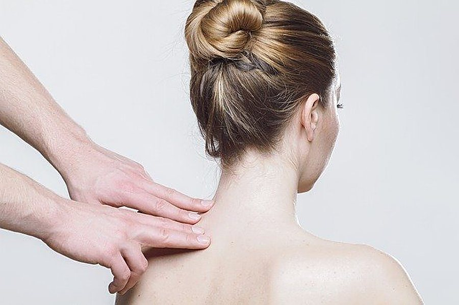
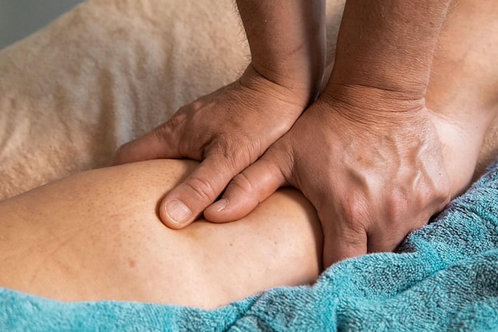
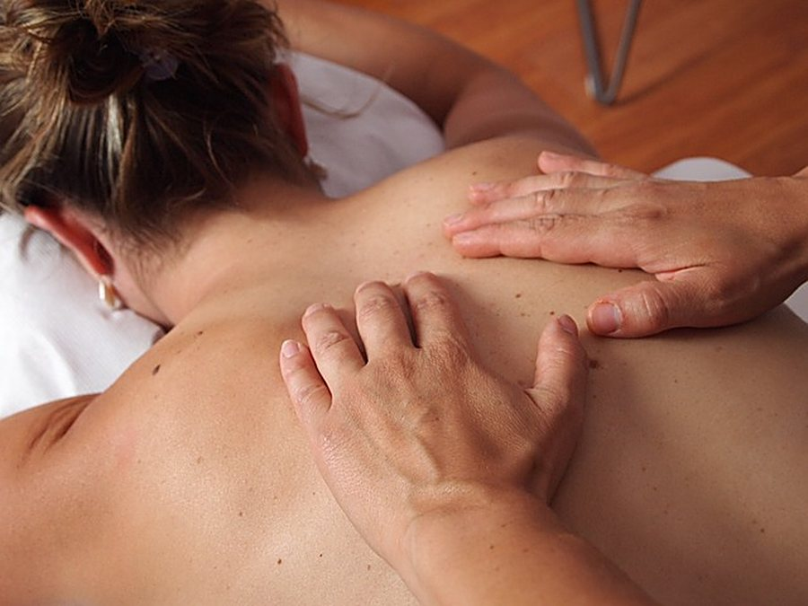
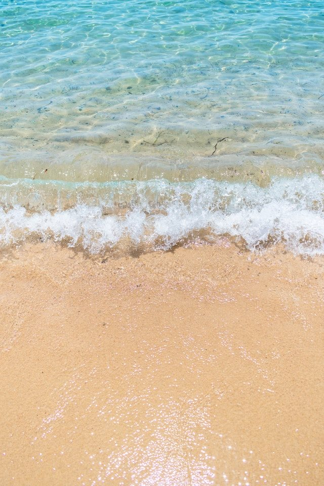
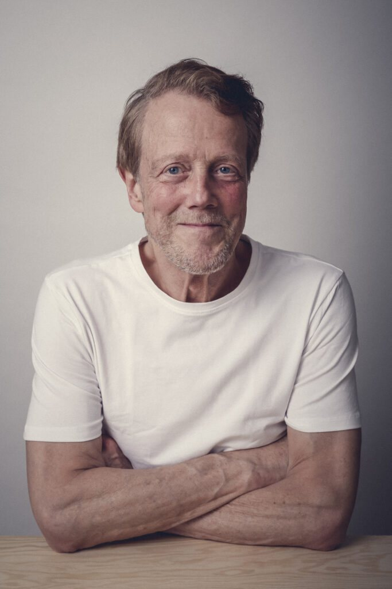

Ontspanningsmassage
Een total body massage om je hoofd leeg te maken en weer verbinding te maken met je lichaam. Bloot of gekleed, de grenzen bepaal jij.
Vanaf € 35 · 30 minMeer info

Holistische massage en massagetherapie in het Medisch Centrum Goes. Om even helemaal tot rust te komen, te herstellen of weer te voelen wat je lichaam je vertelt.
Je kiest voor puur ontspannen of voor massagetherapie. Elke behandeling stemmen we af op jouw wensen en klachten.

Een total body massage om je hoofd leeg te maken en weer verbinding te maken met je lichaam. Bloot of gekleed, de grenzen bepaal jij.

Voor klachten op fysiek, emotioneel of mentaal vlak, zoals stress, burn-out of trauma. Met een voorgesprek en een kort nagesprek.
Tijdens je massage kiest Frans, in overleg met jou, de technieken die passen.

Zacht licht, een goede temperatuur en een allergievrije olie. Jij staat centraal, en alles gaat in overleg.
"Het is jouw quality time, en ik geef jou mijn vakbekwaamheid en ervaren handen."Frans Geurts

"Frans masseert intuïtief: hij voelt waar aanraking en verzachting nodig zijn."
Frans Geurts werkte in de IT, bij de ambulancedienst en als verpleger in het ziekenhuis en in de psychiatrie. Via de studie toegepaste haptonomie en de Holos massagetherapie kwam hij meer in verbinding met zijn eigen lichaam.
Bij een holistische massage staat de hele mens centraal, lichaam en geest. Niet alleen de klacht, maar ook wat je voelt en wat er speelt. Veiligheid en vertrouwen staan daarbij altijd voorop.
Gun jezelf een moment van rust. Bel, stuur een WhatsApp-berichtje of laat hieronder een bericht achter.
Voor een afspraak of een vraag over welke massage bij je past.
Cliënten komen onder andere uit Goes, Kapelle, Kruiningen, Heinkenszand en 's-Gravenpolder. Annuleren of verzetten kan tot 24 uur van tevoren.